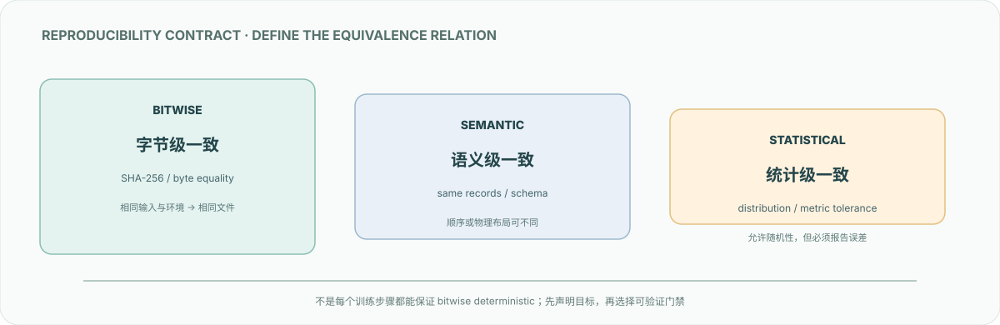
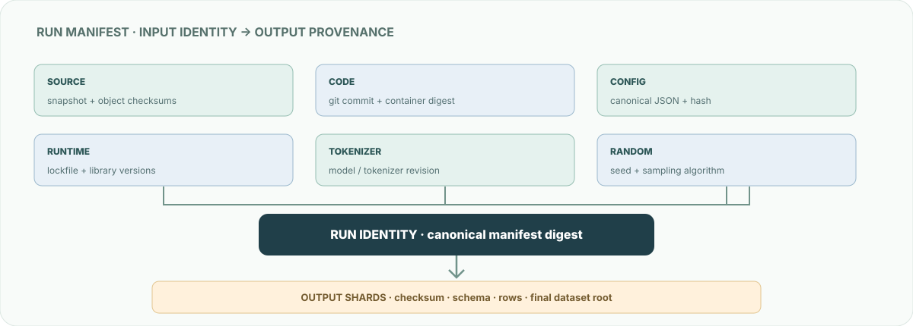

MODULE 17 / LLM DATA ENGINEERING
流水线可复现性
用内容指纹、数据血缘、配置锁定与 run manifest，把一次语料构建变成可检查、可重建的工程对象。
一个月前构建的训练语料今天还能不能重建？如果只能拿到最终的 Parquet 文件，却不知道输入 crawl snapshot、清洗规则、依赖版本、tokenizer revision 和随机种子，那么“同一个数据集”就只是一个名字，而不是一个可验证的对象。
先区分三种“可复现”
可复现不是一个二元开关。不同工程场景需要不同强度的保证，且要把“完全相同的字节”与“统计上等价的结果”区分开。

| 等级 | 判定方式 | 典型用途 | 常见障碍 |
|---|---|---|---|
| Bitwise | 输出文件逐字节相同，checksum 相同 | 归档、缓存复用、审计和确定性预处理 | 并行写入顺序、浮点归约、硬件 kernel、非确定性排序 |
| Semantic | 样本集合、字段含义和规范化后内容一致 | 语料重建、跨版本格式迁移 | 顺序变化、等价文本规范化、schema 演进 |
| Statistical | 关键分布与下游指标在预设容差内 | 训练实验、非确定性模型推理 | 采样噪声、训练随机性、评测方差和数据漂移 |
把一次语料构建定义成可检查的身份元组
只记录 Git commit 不够。相同代码如果读取了不同 crawl snapshot、配置、模型权重或 tokenizer，产出的语料就可能不同。建议至少把以下字段纳入 run manifest：

- Input identity：源数据 snapshot ID、文件清单、每个输入对象的 checksum。
- Code identity：Git commit、工作区是否 dirty、脚本版本、容器镜像 digest。
- Configuration identity：规范化后的配置内容及 hash；不能只记配置文件路径。
- Dependency identity：锁文件、Python / CUDA / 系统库版本，外部模型的不可变 revision。
- Randomness：随机种子、采样算法、分片顺序；声明哪些步骤可能非确定。
- Output identity：shard 路径、字节数、行数、checksum、schema、汇总 manifest digest。
DVC 与数据湖 snapshot：分别解决什么问题？
DVC 把数据文件 / 目录、参数、命令和输出定义为 DAG stage。它对依赖内容计算 hash；依赖或参数变化时使相关 stage 失效；dvc.lock 记录某次 pipeline 的命令、依赖和输出状态。dvc repro 根据 DAG 只重跑需要更新的阶段。它不是调度器，也不会替你保证外部 API 或 GPU 计算天然确定。
Iceberg snapshot 管理的是表的文件集合和元数据版本；DVC 更适合把代码、配置、数据依赖和阶段产物放进工程版本控制工作流。两者可组合：DVC 追踪数据生产 DAG，Iceberg 管理共享数据湖中的可查询快照。
Manifest 最小数据契约
{
"schema_version": "1.0",
"run_id": "corpus-2026-11-21-r03",
"inputs": {
"source_snapshot": "cc-main-2026-11",
"manifest_sha256": "…",
"document_count": 1200000
},
"code": {
"git_commit": "a1b2c3d",
"container_digest": "sha256:…",
"dirty": false
},
"config": {
"canonical_sha256": "…",
"uri": "configs/cleaning-v7.json"
},
"runtime": {
"python": "3.x",
"dependencies_lock_sha256": "…"
},
"tokenizer": {
"name": "tokenizer-family",
"revision": "immutable-revision"
},
"outputs": [
{"path": "shards/00000.parquet", "sha256": "…", "rows": 50000}
]
}示例中的 ID 和 checksum 均为占位符。实际 manifest 应由程序在构建完成后生成，不能把省略号当作可校验值。输入和输出清单最好采用稳定排序与规范化序列化，避免 JSON key 顺序、空格或本地路径导致不必要的身份变化。
工程实现：稳定序列化与数据集指纹
下面只使用 Python 标准库。它演示配置 JSON 的规范化 hash，以及对按路径排序的 shard checksum 清单计算根 digest。生产系统还应校验文件内容本身、schema、行数和 manifest 签名；不能仅信任传入的 checksum 字符串。
import hashlib
import json
from pathlib import PurePosixPath
def sha256_bytes(payload: bytes) -> str:
return hashlib.sha256(payload).hexdigest()
def canonical_json_digest(value: dict) -> str:
encoded = json.dumps(
value,
sort_keys=True,
separators=(",", ":"),
ensure_ascii=False,
allow_nan=False,
).encode("utf-8")
return sha256_bytes(encoded)
def dataset_root_digest(shards: list[dict]) -> str:
normalized = []
for shard in shards:
path = str(PurePosixPath(shard["path"]))
digest = shard["sha256"].lower()
if len(digest) != 64 or any(c not in "0123456789abcdef" for c in digest):
raise ValueError("sha256 must be 64 lowercase hexadecimal characters")
normalized.append({"path": path, "sha256": digest, "rows": int(shard["rows"])})
normalized.sort(key=lambda item: item["path"])
return canonical_json_digest({"shards": normalized})交互实验：只改一个依赖，缓存还能复用吗？
一个 stage 的缓存键至少要覆盖所有会影响输出的输入。下面比较两次运行的关键身份字段；只要其中一个不同，就不能把旧输出当作“同一组输入”的结果直接复用。
| 身份字段 | Run A | Run B（可编辑） |
|---|---|---|
| Source snapshot | cc-2026-11 | |
| Code commit | a1b2c3d | |
| Config hash | cfg-7f31 | |
| Tokenizer revision | tok-r12 |
可复现性失败模式
- 只保存 seed：seed 不能固定输入顺序、硬件 kernel、并发调度、外部模型 revision 和第三方服务响应。
- 记录可变 tag：
latest、main、stable不是不可变版本标识。 - manifest 只记路径：同一路径的对象可以被覆盖；要记录对象版本或内容 checksum。
- hash 规范不统一：JSON key 顺序、浮点表示、Unicode normalization 和路径分隔符可能改变 digest。
- 清理历史快照：retention policy 若短于研究审计周期，就可能删掉仍被论文或模型引用的输入。
- 把可复现等同于正确：一个有 bug 的 pipeline 也可以被完美复现；还要做质量验收和独立抽样审计。
参考资料
- DVC · Defining Pipelines：内容 hash、参数依赖、DAG 与输出追踪。
- DVC · dvc repro：按 pipeline 状态重建阶段和 run cache。
- DVC · dvc.yaml / dvc.lock：锁文件记录的 stage、依赖、参数和输出元数据。
- Apache Iceberg Specification：snapshot、manifest 与并发提交。
- Gebru et al. (2021), Datasheets for Datasets：数据集动机、组成、采集、用途、分发与维护。
- Bender & Friedman (2018), Data Statements for Natural Language Processing：语言数据来源与适用人群的记录。